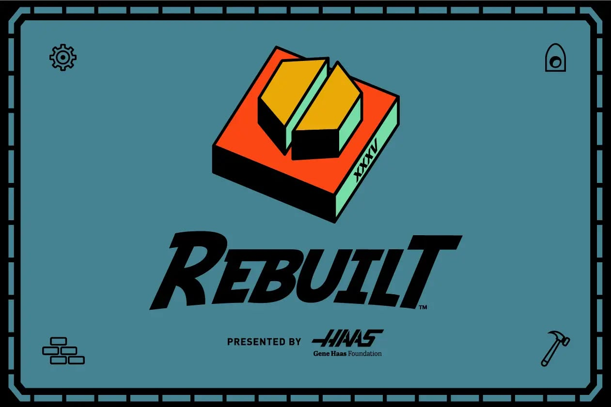
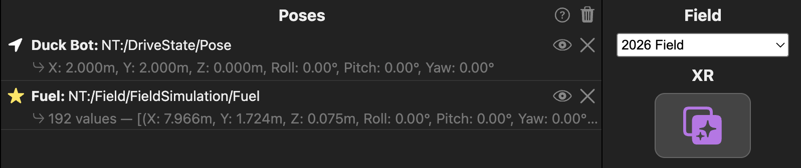
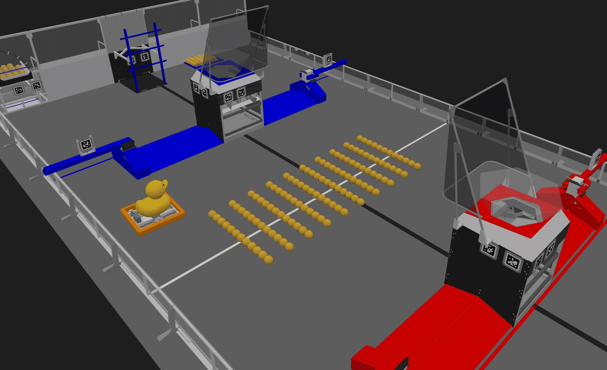
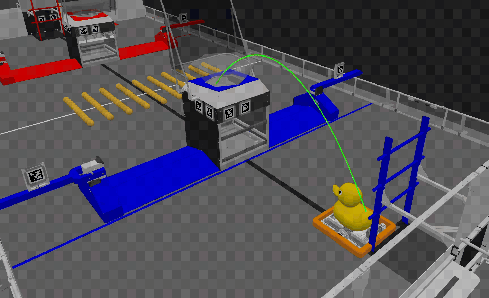

2026 Rebuilt Simulation

FUEL on the Field
Fuel can be added to the field as game pieces:
You can visualize them by calling:
Logger.recordOutput("FieldSimulation/Fuel",
SimulatedArena.getInstance().getGamePiecesArrayByType("Fuel"));
And display the data in AdvantageScope:


Detailed Documents on Game Pieces Simulation
Adding Game Pieces to the Field
**[:octicons-arrow-right-24: Visualizing Game Pieces](https://shenzhen-robotics-alliance.github.io/maple-sim/using-the-simulated-arena/#4-visualizing-game-pieces)**
Interacting with FUEL
Users can use IntakeSimulation to simulate the interaction between robot intakes and the game pieces.
this.intakeSimulation = IntakeSimulation.OverTheBumperIntake(
// Specify the type of game pieces that the intake can collect
"Fuel",
// Specify the drivetrain to which this intake is attached
driveTrainSimulation,
// Width of the intake
Meters.of(0.4),
// The extension length of the intake beyond the robot's frame (when activated)
Meters.of(0.2),
// The intake is mounted on the back side of the chassis
IntakeSimulation.IntakeSide.BACK,
// The intake can hold up to 20 fuel
20);
Detailed Documents on IntakeSimulation
Tip
- If the game in involved multiple types of game pieces and your
IntakeSimulationis targeted to only one, it will be only able to grab that type of game piece.
Launching FUEL into the air
FUEL can be launched into the air, and the simulation will detect if it reaches its target—the HUB.
RebuiltFuelOnFly.setHitTargetCallBack(() -> System.out.println("FUEL hits HUB!"));
SimulatedArena.getInstance()
.addGamePieceProjectile(new RebuiltFuelOnFly(
driveSimulation.getSimulatedDriveTrainPose().getTranslation(),
new Translation2d(), // shooter offet from center
driveSimulation.getDriveTrainSimulatedChassisSpeedsFieldRelative(),
driveSimulation.getSimulatedDriveTrainPose().getRotation(),
Units.Meters.of(0.4), // initial height of the ball, in meters
Units.MetersPerSecond.of(8), // initial velocity, in m/s
Units.Degrees.of(60)) // shooter angle
.withProjectileTrajectoryDisplayCallBack(
(poses) -> Logger.recordOutput("successfulShotsTrajectory", poses.toArray(Pose3d[]::new)),
(poses) -> Logger.recordOutput("missedShotsTrajectory", poses.toArray(Pose3d[]::new))));
